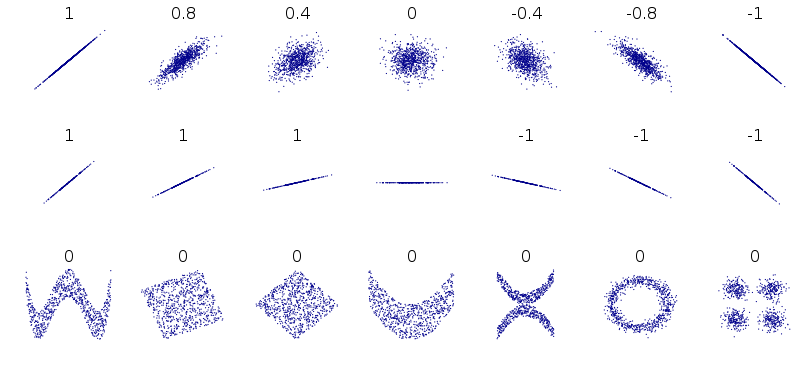
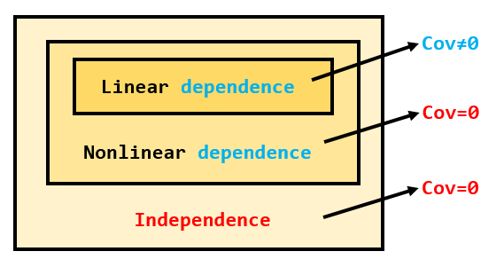
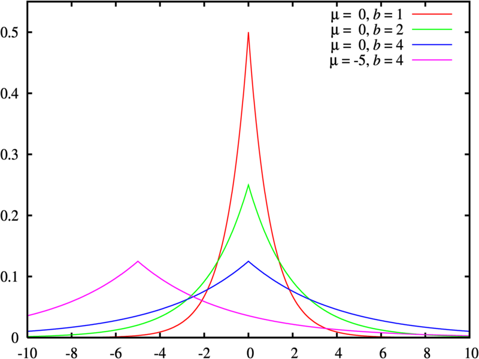
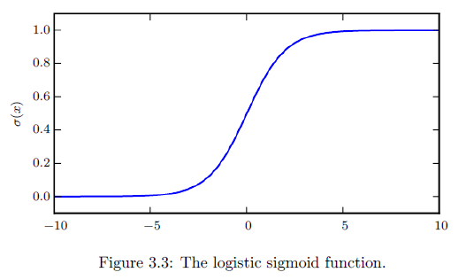
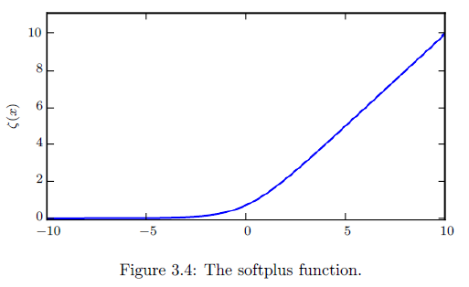
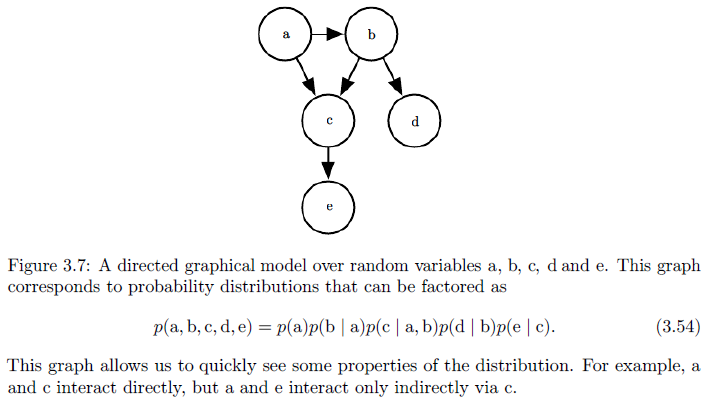
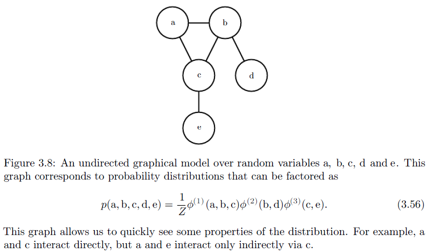

3. Probability and Information Theory
- 概率论：作出概率上的推断
- 信息论：定量分析不确定性
3.1 Why Probability?
产生不确定性的原因：
被建模系统中本身就有的的不确定性
不完全的观测
不充分的建模
建模过程中，更喜欢用simple but uncertain rule rather than a complex but certain one
概率的分类：
- Frequentist probability（频率论）：直接与事件发生的概率关联
- Bayesian probability（贝叶斯）：与定性的确定性关联
3.2 Random Variables
随机变量（that can take on different values randomly）的类型：
- 离散型
- 连续性
3.3 Probability Distributions
3.3.1 Discrete Variables and Probability Mass Functions
概率质量函数（Probability Mass Functions = PMF）记作$ P(x) $
联合分布（Joint Probability Distribution）记作$ P(x,y) $
均匀分布（Uniform Distribution）$ P(x=x_i) = \frac{1}{k} $（with k different states）
3.3.2 Continuous Variables and Probability Density Functions
概率密度函数（Probability Density Functions = PDF）记作$ p(x) $
In the univariate example, the probability that x lies in the interval [a, b] is given by $ \int_{[a,b]} p(x) dx $
均匀分布$ u(x;a,b) = \frac{1}{b-a} $（The “;” notation means “parametrized by”），denote by writing $ x\sim U(a,b) $
3.4 Marginal Probability
- 边缘概率分布：（已知联合分布，求单变量的分布）
3.5 Conditional Probability
条件概率：$ P(y|x) $（已知$ x $，求$ y $。相当于图像分类问题）
公式：$ P(x,y) = P(y|x) \times P(x) = P(x|y) \times P(y) $
3.6 The Chain Rule of Conditional Probabilities
多个变量的联合分布，可以拆成多个条件概率的连乘积：
3.7 Independence and Conditional Independence
变量x和y独立：$ \forall x, y, \quad p(x,y)=p(x) \times p(y) $, denote as $ x \perp y $
变量x和y基于条件z独立：$ \forall x, y, z, \quad p(x,y|z)=p(x|z) \times p(y|z) $, denote as $ x \perp y \, | \, z $
3.8 Expectation, Variance and Covariance
- 期望（expectation）：
方差（variance）：
标准差（standard deviation）：$ \sqrt{Var(f(x))} $
协方差（covariance）：
The covariance gives some sense of how much two values are linearly related to each other.（只是描述线性相关程度的度量）
协方差>0时：一个变大另一个也会变大
协方差<0时：一个变大另一个会变小
相关系数（Correlation）： $ \rho_{X,Y} = \frac{Cov(X,Y)}{\sigma_X \sigma_Y} $，该系数广泛用于度量两个变量之间的线性相关程度

性质：
- $ Cov=0 \Leftarrow independent $
- $ Cov \neq 0 \Leftrightarrow linear \; dependent $
- $ Cov=0 \Rightarrow there \; mush \; be \; no \; linear \; dependence $

协方差矩阵：$ Cov(x)_{i,j} = Cov(x_i,x_j) $，其对角元素是方差。
3.9 Common Probability Distributions
3.9.1 Bernoulli Distribution
做一次实验得到1维的随机变量，只有两个可能的取值（0或1），像抛硬币一样：$ P(x) = \phi^x (1-\phi)^{1-x} $（好像类似于做一次实验得到了sigmoid输出的的随机变量，即一个node只有0或1？）
3.9.2 Multinoulli Distribution
做一次实验得到k维的随机变量$ p=[0,1]^{k} $（意味着每一个entry只能是0或1，且只能有一个entry是1其他都是0），且满足$ \sum_i p_i = 1 $（例如投骰子$p_1=p_2=…=p_6=\frac{1}{6}$。此处的$p_i$不代表随机变量的结果，只代表这个entry取到1的概率），（好像类似于做一次实验然后得到了一个one-hot随机变量，即softmax output layer有k个nodes？）
3.9.3 Gaussian Distribution
- 高斯分布：
精度（precision）：$ \beta = \frac{1}{\sigma^2} $，精度越大则高斯分布越集中
当不知道采取什么先验时，就选取高斯分布吧（因为高斯分布包含的先验知识少）
L2正则等于在MAP Bayesian inference中使用高斯分布作为prior（参见英文版花书的Page236）
多变量时：
其中$ \Sigma $是协方差阵，$ \mu $是均值向量。当然也可以写成精度矩阵的形式（此时精度矩阵$ \beta = \Sigma^{-1} $）
isotropic（各向同性）：协方差阵是scalar乘以identity matrix
- isotropic：像圆一样的分布
- diagonal（协方差阵）：沿着轴向分布（像椭圆一样）
- full-rank（协方差阵）：可以任意斜着分布（像斜着的椭圆一样，不必沿着坐标轴）
3.9.4 Exponential and Laplace Distributions
- 指数分布：
- 拉普拉斯分布（L1正则等于在MAP Bayesian inference中使用isotropic Laplace distribution作为最大化log-prior term的先验，参见英文版花书的Page236）：

3.9.5 The Dirac Distribution and Empirical Distribution
狄拉克分布：$ p(x) = \delta(x-\mu) $（$ \delta $为冲激函数，积分为1）
经验分布（概率密度函数，多个冲激的和。通过采样样本点去近似真实的分布）：
3.9.6 Mixtures of Distributions
混合分布定义：（$P(c)$是multinoulli distribution，表示从多个子分布中选取一个distribution的挑选行为。$P(x|c)$则表示被挑选到之后的子分布的贡献）
- Empirical Distribution是Mixtures of Distributions的一个例子之一。（此时$P(c=i)=\frac{1}{m}$，说明每个子分布被选中的概率是一样的）
- 通过混合分布，可以产生出复杂的概率分布。
Latent variable（隐藏变量）：是一种不能被直接观测到的随机变量
- 在混合分布中，随机变量$c$就是一个latent variable（因为混合分布你只能观测到表象，并不能观测到它的内部机制）
Gaussian mixture model（高斯混合模型）：子分布都是高斯分布
- 高斯混合模型是一个universal approximator of densities：任何光滑的分布都可以用高斯混合模型近似
Prior probability：$P(c)$，未观测任何东西就能被事先确定下来
Posterior probability：$P(c|x)$，因为观测了$x$之后才被计算出来
3.10 Useful Properties of Common Functions
- Logistic sigmoid：

- 常用于生成Bernoulli分布的参数$\phi$（二分类任务的输出概率值）
- 当softmax的两个node分别为0和x时，则退化为单个node输出的sigmoid情况
- Softplus：

- 常用于产生高斯分布中的$\beta$或$\sigma$值（因为输出值大于零）
- 也用于softmax+nll中的合成计算
- 是ReLU的softened版本，plus的名字源自于$y=x$的正数部分的含义
3.11 Bayes’s Rule
- 贝叶斯公式
- 此处的$P(y)$可以通过$P(y)=\sum_x P(y|x)P(x)$计算出来（边缘分布的计算公式）
- 那么我们就只需要知道$P(y|x)$和$P(x)$，就可以推测出$P(x|y)$了
3.12 Technical Details of Continuous Variables
- Measure zero：零测度（例如线在面中的测度是零）
Almost everywhere：几乎所有（除了可以忽略的特例之外，几乎所有）
若随机变量$x$和$y$满足$y=g(x)$，则：
3.13 Information Theory
Idea：
- info=0：必然事件
- info很大：难以发生的事件
- info有可加性时：独立事件
Self-information（自信息，只对一个outcome进行uncertainty的度量）：
- 当使用e为底时，单位是nat；当使用2为底时，单位是bits或shannons
- Shannon entropy（香农熵$H(P)$，自信息在distribution上的期望）：
- 近乎确定性的分布（outcome近乎确定发生）：low entropy
- 接近均匀分布（不确定性程度大）：high entropy
- 对于连续变量，Shannon entropy又称作differential entropy
Kullback-Leibler divergence（KL散度/相对熵）：
- 用于描述两个分布的差异性
- 不可交换性（非对称的）。非负的。分布的差异越大则数值越大（分布相等时值为零）
Cross-entropy（交叉熵）：
- 对$Q$最小化交叉熵，等价于最小化KL散度（因为KL散度的第一项与$Q$无关）。
- 对离散分布的$p$和$q$，交叉熵即$H(p,q) = -\sum_x p(x)\; log \, q(x)$
- 交叉熵损失函数解读（my perspective）：
- 假设softmax层的输出节点数为$n$，那么softmax层的输出就构成了离散概率分布$Q(x)$，且离散随机变量$x$的取值范围是$0 \sim (n-1)$。每一次inference就对应着输入的sample的分布被映射到$Q(x)$的过程。注意，每一次inference得到的prediction并不是deterministic的，只是我们最后取了分布$Q(x)$中概率最大的$x$值作为prediction罢了。
- 那么我们training时制作的one-hot label，就是为$Q(x)$制作的标签。我们假设标签服从分布$P(x)$。
- 注意，每一次inference所对应的$P(x)$和$Q(x)$都是不同的（除非你输入的sample是同一个）
- 我们classification task的目的就是想要model的输出越接近$P(x)$越好，那么我们的任务就是要最小化模型推断得到的分布$Q(x)$和我们制作的标签分布$ P(x) $之间的差异。
- 我们使用KL散度度量时，目标就是最小化$D_{KL}(P||Q)$（必须要让$x \sim P$，否则会出现花书Fig3.6的情况，我们想要的是Fig3.6左边那幅图的样子）。对于同一个sample，我们用optimizer调节parameters相当于优化输出分布$Q(x)$，所以$Q(x)$实质上是一个可变的分布。又因为对$Q$最小化交叉熵，等价于最小化KL散度。所以我们只需要最小化交叉熵就可以了。
- 举个例子，假设softmax输出层4个nodes。我们inference一次相当于生成了一个分布$Q(x)$，以及我们从dataset中取出所对应sample的标签分布$P(x)$。假设分布$Q(x)$可以用一个向量定量表示成$q=[0.1,0.1,0.6,0.2]$，标签分布$P(x)$定量表示成$p=[0,0,1,0]$。随机变量$x$的取值则自然是$0 \sim 3$。那么交叉熵（其中$q_y$的意思是取标签所对应的softmax输出值）：
3.14 Structured Probabilistic Models
Motivation：
- 举例：如果能将联合分布$p(a,b,c)$拆成几个因子的乘积，例如$p(a)p(b|a)p(c|b)$，那么将能极大地减少参数量（这个例子是有向模型）
- 推广开来，即这种思想需要将复杂的分布拆解成几个容易表示出来的因子。我们将这种因子分解的方法，用graph表示，就叫做Structured Probabilistic Models
结构概率模型的种类（对于一个distribution可能同时存在两种图描述方式，即有向/无向只是对于distribution的描述方式，而非种类的划分方式）：
有向模型（将因子表示成条件概率分布）：
其中$Pa_\mathcal{G}(x_i)$表示的是$x_i$的父节点

无向模型（将因子表示成函数）：
其中$\mathcal{C^{(i)}}$表示第$i$个clique，即彼此连接结点的集合，例如下图有三个clique（第一个：abc，第二个：bd，第三个：ce），$\phi^{(i)}(\cdot)$表示函数。前面的$\frac{1}{Z}$作用是归一化（因为不归一化的话，就不能保证这个连乘积项的求和是1）

有向图模型着重强调了因果的顺序关系；无向图模型着重强调了变量的集合间的interaction关系。